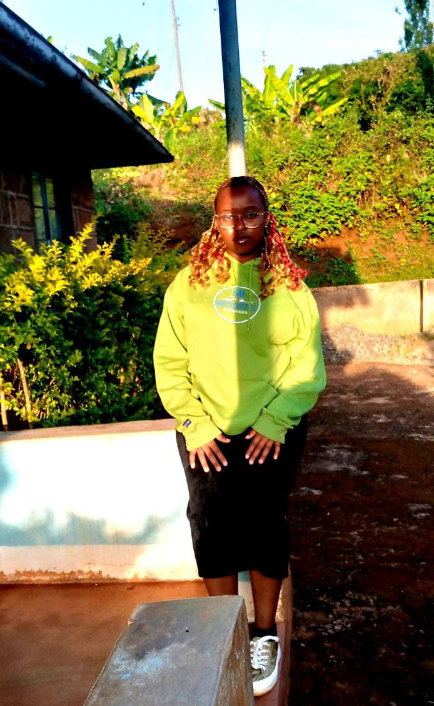

Biography
~My names are Joygladys Njeri Maina.
~I was born on 02/02/2006 and raised in Kiambu county.
~My parents are Isaac Maina Manyeki and Mercy Waithera Maina.
~I have two younger sibblings(Faith Maina and Abigael Maina)
~I currently live in Kikuyu.
Education
~I did my primary education in Utafiti Primary School where I did my KCPE and scored 406 marks.Utafiti Primary School Website.
~I then did my secondary education in Loreto Highschool Limuru where I did my KCSE and scored a B+.Loreto Limuru Website.
~I am currently a student at Moringa school where I am learning software development.Moringa school Home Page.
~After finnishing this course I would like to persue Bachelor of Science Nursing in Kenyatta University.Kenyatta University Website
Skills
~I have a few skills which include:
- Creativity.
- Teamwork.
- Writing.
- Flexibility.
- Adaptability.
- Communication.
Hobbies
~Some of my hobbies are:
- Painting and drawing.
- Cooking.
- Photography.
- Music.
- Volunteering.
- Writing and blogging.